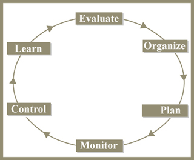

Worum es in diesem Kurs geht
Mit zunehmender technologischer Integration und wachsender Komplexität im Bauwesen verlängern sich auch die Vorlaufzeiten von Bauprojekten. Wer wettbewerbsfähig bleiben will, muss Bauvorhaben mit wirksamen Projektmanagement-Werkzeugen planen, organisieren und steuern.
Der Kurs behandelt drei zentrale Aspekte des Bauprojektmanagements:
- die Theorie, Methoden und quantitativen Werkzeuge, mit denen Bauprojekte wirksam geplant, organisiert und gesteuert werden;
- effiziente Managementmethoden, die sich aus Praxis und Forschung ergeben haben;
- praxisnahes, anwendungsorientiertes Projektmanagementwissen aus realen Baustellensituationen und Exkursionen.
Grundlage ist ein durchgängiges Projektmanagement-Rahmenwerk, das den Projektlebenszyklus in fünf Phasen gliedert: Organisieren, Planen, Überwachen, Steuern und Lernen aus abgeschlossenen und laufenden Bauprojekten. Innerhalb dieses Rahmens lernen Sie die Methoden und Werkzeuge für jeden Abschnitt des Prozesses kennen – ebenso wie die Theorien, auf denen sie beruhen. Am Ende des Kurses sind Sie in der Lage, das Rahmenwerk anzupassen und anzuwenden, um ein Bauprojekt in einer Organisation aus Architektur, Ingenieurwesen und Bauausführung (A/E/C) wirksam zu managen.

Das Rahmenwerk: fünf Phasen
Der gesamte Kursstoff ist in fünf große Abschnitte gegliedert. Sie bilden zugleich den roten Faden für Ihr Selbststudium:
Projektorganisation
Wahl einer geeigneten Organisationsstruktur, Aufbau des Organisationsstrukturplans (OBS), Analyse der Informationsflüsse, Produktentwicklungsprozesse und Design Structure Matrix.
Projektplanung
Projektstrukturplan (WBS), Budget und Kostenstrukturplan, Terminplanung unter Ressourcenrestriktionen, Berücksichtigung von Risiken – mit CPM, PERT, GERT, Monte-Carlo-Simulation und Critical-Chain-Planung.
Projektüberwachung
Kennzahlen und Berichtsstrukturen, mit denen der Projektfortschritt über den gesamten Lebenszyklus verfolgt wird – insbesondere die Earned-Value-Analyse für Termin-, Kosten- und Qualitätsabweichungen.
Projektsteuerung
Korrekturmaßnahmen, um aus dem Ruder gelaufene Projekte wieder auf Kurs zu bringen – bei Leistungsumfang, Produktleistung, Terminen und Budget, einschließlich Änderungs- und Konfigurationsmanagement.
Projektlernen
Lebenszyklus- und Post-mortem-Analysen, um Erkenntnisse in künftige Projekte zu überführen; Einführung in die System-Dynamics-Simulation zur Bewertung des Projektverhaltens.
Die Lernmethode: So arbeiten Sie den Kurs professionell durch
Der Kurs folgt einer bewährten Didaktik aus Vorlesung, Übung, Pflichtlektüre und projektbasiertem Lernen im Team. Für ein strukturiertes Selbststudium empfehlen wir folgenden Ablauf:
- Vorbereiten: Lesen Sie vor jeder Einheit die zugehörige Pflichtlektüre. So kommen Sie mit den Begriffen und Konzepten bereits vertraut in die Vorlesung.
- Durcharbeiten: Studieren Sie das jeweilige Vorlesungsskript (PDF) entlang des Kursplans – zwei Einheiten pro Woche entsprechen dem Originaltempo des Kurses.
- Vertiefen: Übungen und Fallbeispiele festigen den Stoff. Im Original waren wöchentliche Übungsstunden (Recitations) verpflichtend – planen Sie dafür einen festen Termin pro Woche ein.
- Anwenden: Bearbeiten Sie das Semesterprojekt in vier Phasen – idealerweise im Team, das wie ein Unternehmen zusammenarbeitet. Das Projekt macht 50 % der Gesamtleistung aus.
- Reflektieren: Schließen Sie jede Projektphase mit einer ehrlichen (Selbst-)Bewertung ab – im Originalkurs geschah dies über vertrauliche Peer-Evaluationen im Team.
Eckdaten
| Kursnummer | 1.040 (zugleich 1.401J / ESD.018J), MIT – Department of Civil and Environmental Engineering |
| Dozent | Dr. Nathaniel Osgood, Senior Lecturer |
| Semester | Frühjahr 2004 · Bachelor-Niveau (Undergraduate) |
| Umfang | 2 Vorlesungen pro Woche à 1,5 Stunden, dazu 1 Übungsstunde pro Woche |
| Themenfelder | Ingenieurwesen → Bauingenieurwesen → Baumanagement · Wirtschaft → Projektmanagement |
| Materialien | 18 Vorlesungsskripte (PDF), Semesterprojekt in 4 Phasen, Pflicht- und Ergänzungsliteratur |